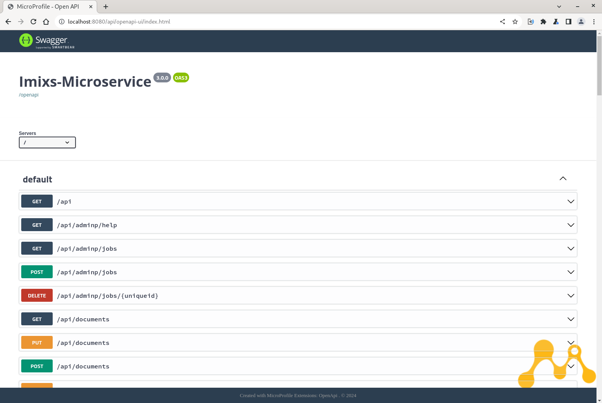

Microservice
The Imixs-Microservice project encapsulates the Imixs-Workflow Engine into a RESTful web service interface. The Imixs-Microservice can be bound to any business application, independent from the technology behind. In this architectural style the business logic can be changed without changing a single line of code.
Imixs-Microservice is based on Eclipse Microprofile and supports the MicroProfile OpenAPI Specification 3.0. You can open the OpenAPI documentation at http://localhost:8080/openapi.
In addition the project provides a Swagger UI for easy testing:
You can open the UI in your browser: http://localhost:8080/api/openapi-ui:
After you have setup the Imixs-Workfow Microservice you can deploy
a workflow Model. A workflow model can be created using the Imixs-BPMN eclipse
Plugin. A workflow Model
can be deployed into the Imixs-Workflow using the 'Model-REST
service' interface. You can deploy the default 'Ticket Workflow'
using the curl command:
curl --user admin:adminadmin --request POST -Tticket.bpmn http://localhost:8080/api/model/bpmn
You will find the example model in the Imixs-Microservice project located at: /src/main/resources/ticket.bpmn
To verify if the model was deployed successfully you can check the deployed model version with the Rest API: http://[YOURSERVER]/api/model
To create a new process instance you can POST a XML Object to the Imixs-Microservice in the following :
<document xmlns:xsi="http://www.w3.org/2001/XMLSchema-instance" xmlns:xs="http://www.w3.org/2001/XMLSchema">
<item name="$modelversion"><value xsi:type="xs:string">1.0</value></item>
<item name="$taskid"><value xsi:type="xs:int">1000</value></item>
<item name="$eventid"><value xsi:type="xs:int">10</value></item>
<item name="_subject">
<value xsi:type="xs:string">some data...</value>
<value xsi:type="xs:string">more data...</value>
</item>
</document>
curl --user admin:adminadmin -H "Content-Type: application/xml" -H 'Accept: application/xml' -d \
'<document xmlns:xsi="http://www.w3.org/2001/XMLSchema-instance" xmlns:xs="http://www.w3.org/2001/XMLSchema">
<item name="$modelversion"><value xsi:type="xs:string">1.0</value></item>
<item name="$taskid"><value xsi:type="xs:int">1000</value></item>
<item name="$eventid"><value xsi:type="xs:int">10</value></item>
<item name="_subject">
<value xsi:type="xs:string">some data...</value>
<value xsi:type="xs:string">more data...</value>
</item>
</document>' \
http://localhost:8080/api/workflow/workitem
The result can be verified by the following GET URI:
http://[YOURSERVER]/api/tasklist/creator/adminSee the Imixs-Microservice Project on GitHub for further Information.